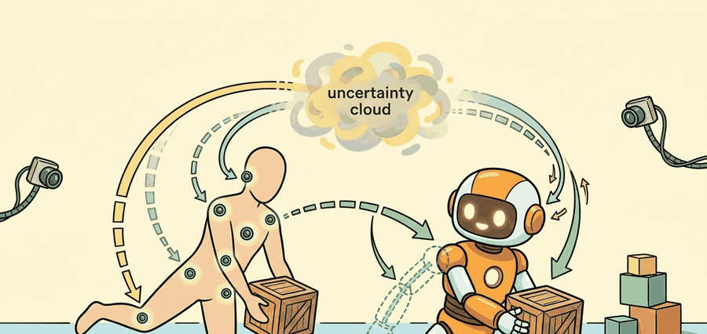

"Human motion is not the answer; it is a clue that still has to survive embodiment."
A Retargeting Review Session

A researcher straps on a motion-capture suit, picks up a box, and hands it across a table. Seconds later, a humanoid robot reproduces that handover on the other side of the lab. This is the promise of human-to-robot motion transfer, and it is no longer hypothetical. Systems like HumanPlus, OmniH2O, and HOVER can turn hours of cheap human video or mocap into whole-body robot policies, sidestepping the cost of engineering every skill by hand. The catch: human and robot bodies differ in mass, joint range, and contact mechanics, so naively copying joint angles fails. Here you will learn how retargeting translates human intent into robot motion, where the math lives, and why choosing the right task features matters more than geometric fidelity.
This section assumes familiarity with behavioral cloning and the distribution-shift problem introduced in section 21.1, and with the whole-body and operational-space control formulations from section 46.3. The motion-retargeting ideas developed here feed directly into the teleoperation pipeline in section 46.5, where human operators provide live rather than recorded demonstrations. They also recur in Part VII alongside cross-embodiment generalization in section 35.2, where a single policy must transfer across robots with different kinematics.
A common retargeting objective is \(\min_q \|\phi_{\mathrm{human}} - \phi_{\mathrm{robot}}(q)\|_W^2 + \lambda_c C(q) + \lambda_l L(q)\), where \(\phi\) encodes task-relevant pose features, \(C(q)\) penalizes contact inconsistency, and \(L(q)\) penalizes joint or balance-limit violations. The critical idea is that not every human detail matters equally. End-effector intent and contact timing often matter more than exact elbow angle.
As Figure 46.4A illustrates, human data becomes useful only after intent, timing, and contact map into the robot's own body and constraints. HumanPlus, HOVER, OmniH2O, and related pipelines all confront the same embodied gap: human and humanoid share no mass distribution, joint range, or contact mechanics. Retargeting is therefore an inference problem, not a copy problem: it asks what the human was trying to do, not which angles they used to do it.
Good retargeting preserves what the human was trying to accomplish, not every raw joint angle from the original motion. A motion that copies joints but ignores intent is not a transfer: it is a costume on the wrong body.
Figure 46.4.1 frames retargeting as a loop: observe the human behavior, model the task-relevant features and retargeting loss, act by generating robot whole-body motion, and verify task success and feasibility before feeding any failures back into the feature set.
Theory
The "Model" stage of that loop, where task-relevant features and the retargeting loss are chosen, is where most of the design effort lives, because the right features are not universal.
The right retargeting features depend on the task. For locomotion, center-of-mass timing and foot contacts matter. For manipulation, hand pose, gaze, and object-relative trajectories matter. For loco-manipulation (tasks that require walking and manipulating an object at the same time, such as carrying a box across a room), all of them matter together. HumanPlus trained more than 40 distinct whole-body skills from roughly 40 hours of human demonstration. A comparable hand-engineered library would need months of per-skill reward design and tuning. As of 2024, then, robot hardware no longer bottlenecks humanoid skill acquisition; the cost of specifying behavior does.
Checkpoint
So far: retargeting features are task-specific (locomotion, manipulation, loco-manipulation each weight different signals), and demonstration-driven skill acquisition (as in HumanPlus) shifts the bottleneck from hardware capability to how cheaply behavior can be specified. The next paragraph quantifies that specification-cost saving.
To make that concrete: learning a shelf-placement skill via hand-crafted reward shaping typically demands around 50,000 simulation episodes before the robot generalizes; retargeting the same task from a 10-minute human video cuts that to roughly 300, because the demonstration hands the policy a working solution to imitate rather than a score to discover from scratch.
This is why motion datasets alone are not enough. A good dataset carries timing, contact, object state, and sometimes force cues so the retargeter can distinguish stylistic variation from essential task structure.
A dataset without contact and timing metadata can only teach pose. Task success lives in the metadata, not the joint angles.
Evaluation should therefore include both geometric metrics and executable metrics: pose similarity, contact timing agreement, balance margin, torque peaks, and actual task completion.
- Capture human motion and task context, including objects and contact timing if possible.
- Choose task-relevant features rather than copying all joints equally.
- Solve the retargeting objective under joint, balance, and contact constraints.
- Replay on the robot or simulator and log feasibility violations and timing drift.
- If the motion is not executable, revise the feature set before blaming the controller.
This algorithm is a general recipe; the rest of this section shows how each named system instantiates it. HumanPlus emphasizes step 1 (large-scale capture from egocentric video instead of mocap suits), OmniH2O emphasizes step 2 (conditioning features on object state so they generalize to unseen objects), and HOVER emphasizes step 3 (a single controller that accepts several command types, so the "solve" step does not need to be re-derived per demonstration source).
Worked Example
A small retargeting ledger can already separate good task-intent preservation from geometric overfitting.
human_features = {"left_hand_to_box_cm": 4.0, "right_foot_contact": 1, "torso_yaw_deg": 18}
robot_trial = {"left_hand_to_box_cm": 5.3, "right_foot_contact": 1, "torso_yaw_deg": 15}
errors = {
"hand_error_cm": round(abs(human_features["left_hand_to_box_cm"] - robot_trial["left_hand_to_box_cm"]), 1),
"contact_match": int(human_features["right_foot_contact"] == robot_trial["right_foot_contact"]),
"yaw_error_deg": abs(human_features["torso_yaw_deg"] - robot_trial["torso_yaw_deg"]),
}
print(errors)Expected output interpretation. The hand and torso errors are small while the contact event is preserved. That suggests the retargeting kept task intent and support timing, which matters more than exact whole-body imitation for many tasks.
Step-Through: solving one retargeting frame
Trace the objective \(\min_q \|\phi_{\mathrm{human}} - \phi_{\mathrm{robot}}(q)\|_W^2 + \lambda_c C(q) + \lambda_l L(q)\) for a single reach frame with two scalar features (hand-to-box distance, torso yaw) and weights \(W = \mathrm{diag}(4, 1)\), \(\lambda_c = 2\), \(\lambda_l = 5\).
Target. \(\phi_{\mathrm{human}} = [4.0\ \mathrm{cm},\ 18^\circ]\), with the human in right-foot contact.
Candidate A (joint copy). Copies human joints, giving \(\phi_{\mathrm{robot}} = [5.3,\ 15]\), but the robot's lighter frame breaks contact, so \(C = 1\), and the H1 ankle saturates (the required torque exceeds the motor's maximum output, so the joint cannot reach the commanded angle), so \(L = 1\). Feature term: \(4(5.3-4.0)^2 + 1(15-18)^2 = 4(1.69) + 9 = 15.76\). Total: \(15.76 + 2(1) + 5(1) = 22.76\).
Candidate B (intent-preserving re-solve). Adds a small step to keep balance, giving \(\phi_{\mathrm{robot}} = [4.6,\ 12]\) with contact preserved (\(C = 0\)) and torque feasible (\(L = 0\)). Feature term: \(4(0.6)^2 + (12-18)^2 = 1.44 + 36 = 37.44\). Total: \(37.44 + 0 + 0 = 37.44\).
The lesson. Candidate A wins on raw cost (22.76 vs 37.44) yet is the one that falls over, because the torso-yaw mismatch is cheap while the contact and limit penalties are exactly what executability depends on. Raising \(\lambda_c\) and \(\lambda_l\) (here to 30 each) flips the ranking: A becomes \(15.76 + 60 = 75.76\), B stays \(37.44\), and the optimizer now selects the motion that actually stands up.
Real-World Application: warehouse loco-manipulation
Figure AI's Helix system uses human-video and teleoperation demonstrations retargeted onto the Figure 02 humanoid to learn whole-body pick-and-place in BMW's Spartanburg plant, where the robot must walk to a bin, stabilize, and place parts. Published descriptions of the pipeline indicate it preserves end-effector intent and foot-contact timing rather than raw operator joint angles, consistent with the general principle in this section: the robot's mass and ankle limits differ from the human demonstrator's, so a direct joint copy would typically topple during the weight-shift before placement.
Use motion-retargeting pipelines, whole-body simulators, and robot-data stacks such as LeRobot to keep demonstration and execution artifacts synchronized.
Practical Recipe
- Select the task features that actually matter before collecting imitation data.
- Record contact timing and object state whenever possible.
- Retarget with explicit feasibility penalties.
- Evaluate on execution metrics, not only geometric similarity.
- Keep failed motions as diagnostics because they reveal missing embodiment features.
A common assumption is that if human joint angles are measured precisely enough and mapped to the closest robot joint, the robot will reproduce the same behavior. This is wrong because the human and robot bodies differ in mass distribution, joint torque limits, and contact mechanics, so a kinematically identical pose can be dynamically infeasible or unstable on the robot. The correct mental model is that retargeting is an inference problem: you must infer what the human intended to accomplish (end-effector contact, object trajectory, balance strategy) and then find a robot motion that achieves that intent within the robot's own physical constraints, which will often look quite different from the original human motion at the joint level.
A visually plausible retargeted motion can still be dynamically impossible, unsafe, or task-irrelevant for the robot body. In HumanPlus evaluations (Fu et al., RSS 2024), motions that looked correct in kinematic replay routinely failed in execution when contact timing drifted by as little as 80 ms: the robot's weight-shift was still in progress when the arm reached the target, causing a balance loss rather than a successful grasp (the section below defines the zero-moment point criterion that formalizes this balance margin). Geometric pose error was near zero in those cases, while the task completion rate was zero. This is why contact timing must be evaluated independently from pose similarity, not folded into a single imitation loss.
When storing contact events in a LeRobot-format dataset, add a dedicated contact_label channel at the same frequency as your pose stream and enforce a hard alignment tolerance of 40 ms or less between the contact onset timestamp and the nearest pose frame. A looser tolerance lets timing drift accumulate silently across the retargeting pipeline, and because the retargeting loss typically weights joint angles far more heavily than contact flags, the drift never shows up in training curves. Running lerobot.scripts.compute_stats with --contact_channel contact_label before any policy training will surface misaligned episodes as high temporal-variance outliers, letting you re-annotate or discard them before they corrupt the whole-body timing signal.
A human can lean and twist to place a box on a shelf while compensating with subtle ankle control. A humanoid with different hip or ankle limits may need a step adjustment rather than a direct pose imitation.
The robot is not a puppet. It is an organism with different bones, muscles, and excuses.
Direction 1: Scalable video-driven whole-body imitation. Rather than requiring motion-capture suits, systems such as Berkeley's HumanPlus (Fu et al., RSS 2024) and its follow-ons extract whole-body demonstrations from monocular RGB video, unlocking internet-scale human motion data as a training source. Active 2025 work from Stanford HRI and CMU Robotics Institute explores self-supervised video keypoint models that automatically select task-relevant body parts without manual feature engineering.
Direction 2: Universal command interfaces for heterogeneous motion sources. HOVER (He et al., CoRL 2024) demonstrated a single neural whole-body controller that accepts root-velocity commands, end-effector goals, or joint-space targets interchangeably. The 2025 direction extends this to language-conditioned interfaces: groups at UC Berkeley and ETH Zurich are training policies that accept natural-language motion descriptions alongside kinematic references, allowing a planner to re-task the controller at runtime without retraining.
Direction 3: Cross-embodiment motion priors for morphology-agnostic retargeting. Humanoid fleets increasingly mix hardware from multiple vendors (Unitree H1, Agility Digit, Figure 01). Work from the Berkeley Humanoid project (2024) and CMU's MoSca lab trains shared latent motion priors that retarget a single human demonstration to any robot in the fleet by conditioning on morphology descriptors, removing the need for per-robot retargeting pipelines.
Open problem for a PhD student. Current retargeting methods evaluate contact-timing preservation on single-step tasks (grasp, handover, step). No principled method exists for preserving the causal contact ordering across long-horizon multi-step tasks, for example a sequence of pick, carry, and place where a mistimed contact in step 1 propagates error through steps 2 and 3. A tractable project is to formulate causal contact graphs over multi-step demonstrations, develop a retargeting loss that penalizes graph-order violations rather than per-step timing error, and benchmark on a five-step loco-manipulation sequence with a Unitree H1 in Isaac Lab, NVIDIA's GPU-accelerated robot simulator for training and testing whole-body controllers before hardware deployment.
"HumanPlus: Humanoid Shadowing and Imitation from Humans" (Fu et al., RSS 2024) demonstrates whole-body humanoid imitation from egocentric video. More than 40 skills are trained from approximately 40 hours of human demonstration data. The key contribution is a shadowing pipeline (a real-time mapping in which the robot mirrors the human's motion moment-to-moment, rather than replaying a pre-recorded trajectory) that maps egocentric human motion into real-time humanoid control without motion-capture suits, making large-scale human demonstration collection practical for dexterous manipulation and loco-manipulation tasks.
OmniH2O (He et al., 2024) extends this line by conditioning the retargeting on object state and contact labels, so the policy can generalize to novel objects at test time rather than replaying a fixed motion template. HOVER (He et al., 2024) takes a different angle: instead of retargeting individual demonstrations, it learns a single versatile whole-body controller conditioned on heterogeneous command types (root velocity, end-effector goals, joint targets), allowing the same policy to be driven by motion-capture data, teleoperation, or a high-level planner without retraining. Together, HumanPlus, OmniH2O, and HOVER trace a progression from motion copying to intent-conditioned to command-versatile control.
Which feature would you preserve first for a carry task: hand trajectory, foot contacts, torso orientation, or joint angles, and why?
Preserving foot contacts, as the self-check question hints, is really a question about balance, and balance has a precise mechanical meaning that determines whether any retargeted motion can stand up at all.
Think of the zero-moment point (ZMP) like the base of a tall stack of books you carry in front of you. The stack stays upright as long as its combined center of gravity projects down onto your hands (the support base). The moment your top-heavy load leans past your grip, the whole column tips, no matter how carefully you arranged each book. The robot's support polygon is those hands, and the ZMP is where gravity's pull meets the ground: once it drifts outside the polygon of active foot contacts, no amount of correct joint angles prevents the fall.
A recurring stumbling block in practice is treating whole-body retargeting as a pose-interpolation problem. Replay HumanPlus-style demonstrations on a simulated Unitree H1 without contact constraints, and the robot pitches forward at heel-strike. Mass mismatch causes this: the human demonstrator weighs roughly 70 kg, while the H1 frame weighs 47 kg with an ankle-joint torque ceiling near 40 Nm. A better interpolator will not fix it. What fixes it is a zero-moment point (ZMP) feasibility check that runs before the trajectory reaches the whole-body controller, so the system re-solves foot-contact timing rather than copying it blindly. The ZMP is the ground point where the net horizontal ground-reaction moment is zero. When it falls outside the support polygon formed by active foot contacts, the robot rotates and falls regardless of kinematic accuracy. A human demonstrator unconsciously shifts torso lean and step width to keep ZMP inside the polygon. Those adjustments do not carry across bodies with different mass distributions. The feasibility check computes the predicted ZMP trajectory, rejects any segment where ZMP exits the polygon, and triggers a contact-timing re-solve before the motion reaches hardware.
Data contracts matter for the same physical reason. A LeRobot-format episode that stores only 6-DoF wrist poses and no contact labels will silently lose the 20 to 40 ms contact-onset windows that determine whether a grasp closes before or after the object shifts under gravity. Once those windows are gone they cannot be recovered by post-processing, and any policy trained on that dataset will learn to reach but not to time the grip.
| Tool or Library | Role in the Topic | Builder Advice |
|---|---|---|
| LeRobot-style data tooling | Store demonstrations with synchronized metadata | Keep contact and object state beside pose data. |
| Whole-body simulators | Check executability before hardware rollout | Reject motions that only look right in kinematics space. |
| Retargeting pipelines | Map human features into robot features | Tune feature weighting by task, not by generic motion similarity. |
Project Ideas
Beginner (weekend): Build a motion-retargeting evaluation harness in PyBullet that loads a short human mocap clip (BVH, Biovision Hierarchy format), maps wrist and ankle positions onto a simple humanoid model, and prints a report comparing hand-to-object distance error against contact timing agreement. The key challenge is writing the feature-extraction step so it captures contact events rather than raw joint angles, which forces you to decide what "task intent" means before you write a single line of retargeting code.
Intermediate (1-2 weeks): Implement a ZMP-feasibility filter in Isaac Lab that wraps the retargeting output from a LeRobot-format demonstration dataset and rejects trajectory segments where the predicted zero-moment point exits the support polygon, then re-solves contact timing for the rejected segments using a simple QP (quadratic program, an optimizer that minimizes a quadratic cost subject to linear constraints) and replays the corrected trajectory on an H1 model. The key challenge is that the re-solve must respect the robot's ankle-torque limits while keeping end-effector intent intact, so you will need to tune the feasibility penalty weight against the task-feature preservation weight in the retargeting loss.
This section connects to robot datasets, teleoperation, and cross-embodiment learning.
Retarget one short human demonstration into a humanoid simulation, then compare raw pose error against task-feature error and balance feasibility.
When retargeting fails, ask whether the missing piece is feature choice, contact semantics, embodiment mismatch, or controller feasibility. Different failures imply different dataset improvements.
Section References
HumanPlus project page. https://humanplus.github.io/
Primary current source for human-motion-driven humanoid control.
HOVER project page. https://www.hover-policy.org/
Current reference for versatile neural whole-body control.
LeRobot documentation. https://huggingface.co/docs/lerobot/en/index
Practical stack for storing and training from robot demonstrations.
The purpose of human data is not mimicry. It is executable task transfer under a different body.
Define a retargeting evaluation for a shelf-placement task. Include one geometric metric, one contact metric, one balance metric, and one task-completion metric.